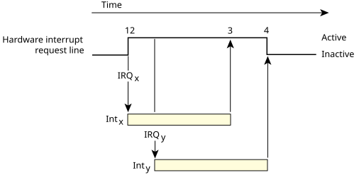

Depending on your hardware configuration, there may actually be multiple hardware sources associated with an interrupt. This issue is a function of your specific hardware and bus type. This characteristic (plus good programming style) mandates that your IST ensure that the hardware associated with it actually caused the interrupt.
Most PIC (Programmable Interrupt Controller) chips can be programmed to respond to interrupts in either an edge-sensitive or level-sensitive manner. Depending on this programming, interrupts may be sharable.

In the above scenario, if the PIC is operating in a level-sensitive mode, the IRQ is considered active whenever it's high. In this configuration, while the second assertion (step 2) doesn't itself cause a new interrupt, the interrupt is still considered active even when the original cause of the interrupt is removed (step 3). Not until the last assertion is cleared (step 4) will the interrupt be considered inactive.
In edge-triggered mode, the interrupt is
noticed
only once, at step 1. Only when the
interrupt line is cleared, and then reasserted, does the
PIC consider another interrupt to have occurred.
QNX OS allows IRQs to be shared, meaning that multiple ISTs can be associated with one particular IRQ. The impact of this is that each thread in the chain must look at its associated hardware and determine if it caused the interrupt. This works reliably in a level-sensitive environment, but not an edge-triggered environment.
To illustrate this, consider the case where two hardware
devices are sharing an interrupt. We'll call these devices
HW-A
and HW-B.
Two ISTs are attached to one interrupt source (via the
InterruptAttachThread() or InterruptAttachEvent()
call), with priorities such that IST-A is run first, then IST-B second.
Now, suppose HW-B asserts the interrupt line first. QNX OS detects the interrupt and dispatches the two threads in order. IST-A runs first and decides (correctly) that its hardware didn't cause the interrupt. Then IST-B runs and decides (correctly) that its hardware did cause the interrupt; it then starts servicing the interrupt. However, before IST-B clears the source of the interrupt, suppose HW-A asserts an interrupt; what happens depends on the type of IRQ:
hungsystem, because the interrupt will never transit between clear and asserted again, so no further interrupts on that IRQ line will ever be recognized.
Since IST-A clears the source of the interrupt (and IST-B doesn't do anything, because its associated hardware doesn't require servicing), everything functions as expected.